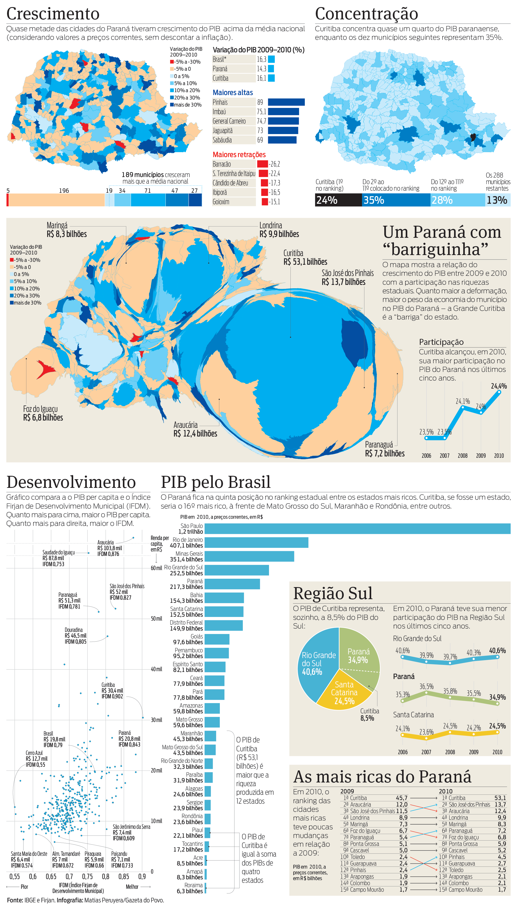

Visualizando o PIB
A abundância de dados, em algumas situações, mais atrapalha do que ajuda. Neste caso, peguei os dados das mãos do repórter para explorá-los visualmente e escolher as melhores visualizações para um infográfico de página inteira. Depois de selecionadas as visualizações, o repórter preparou textos para apresentar cada uma.
As ferramentas usadas incluíram desenho vetorial, planilhas, scripts na linguagem Processing, QGIS para processamento dos mapas, e um software obscuro para modificar proporcionalmente as áreas dos municípios.
